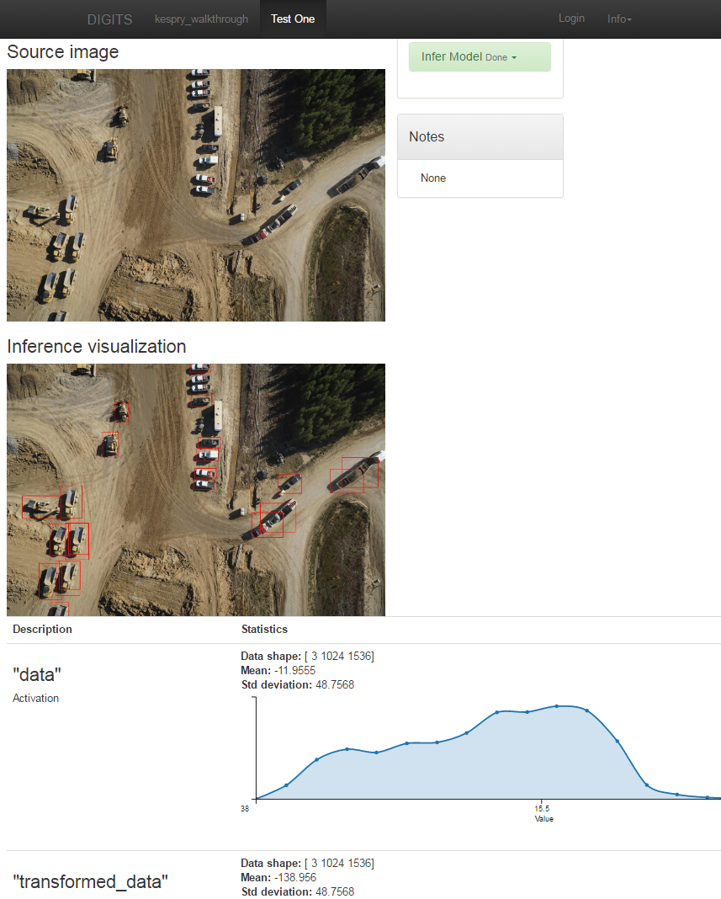
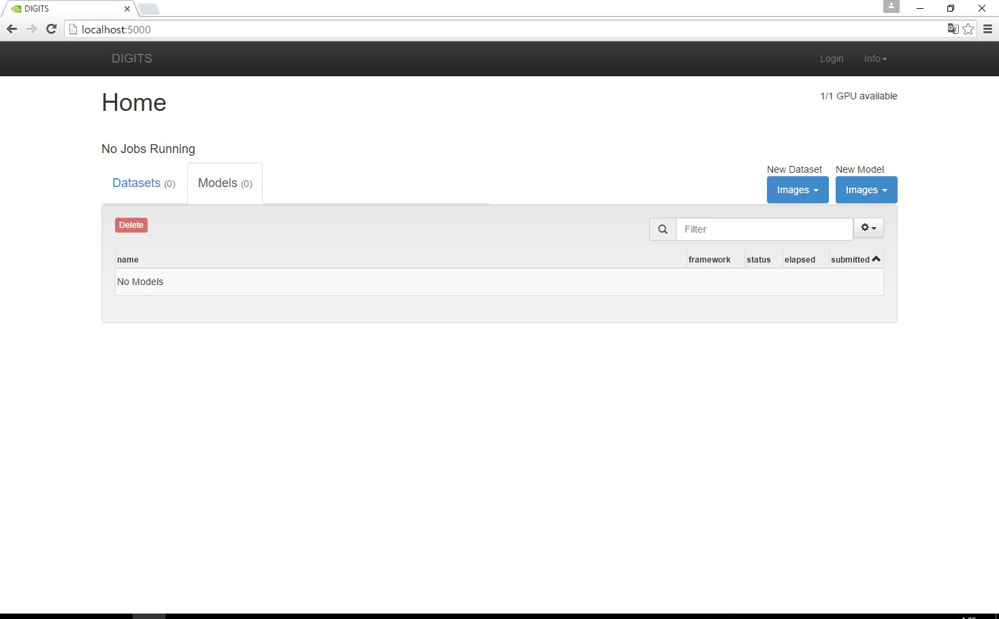

前回はcuDNN 5.0を導入してみました。
What is DIGITS?
DIGITSはNVIDIAが提供している、Caffeを利用した深層学習モデルの訓練のためのWebアプリです。 DIGITSは the Deep Learning GPU Training System の略とのこと。 Githubで開発が進められています。

これまで、CaffeがLinux環境での動作が前提でしたが、MicrosoftがCaffeのWindows版を提供し始めたことで風向きが変わりました。 前から、リッチなGUIで深層学習をしてみたくても、Windows環境は遅れていたため、涙をのんでいたのですが、そんな日々は終わりました。 
そんなDIGITSをWindowsに導入してみます。 ちなみに、DIGITS公式でもWindows版のCaffeに言及していますが、あっちがサポートしているのは、
本家BVLCのWindows版Caffeであって、MicrosoftのWindows版Caffeではありません。
なので、今回は相当イレギュラーです。 といっても、イレギュラーなのは、少しだけですが。
Install
基本は、公式のWindows向けdocsに従います。 必要なものは下記の5つ。
Python2
CUDA 7.5
CuDNN 5.1
Caffe
Graphviz
Caffe for Windowsを導入しているなら、Miniconda2、CUDA、CuDNNが入っているので大丈夫でしょう。 バージョンが違うなら追加でインストールするだけです。 ちなみに、前回はCuDNNの5.0をインストールしましたが、DIGITSは5.1を要求します。 5.1は2016年7月末現在、RC (リリース候補版)です。 しかし、Microsoft版のCaffeを使ってると、別に5.0でもDIGITSは動きます。 (起動までは問題ないです。)
Python2
Pythonそのものはもう入っていますが、いくつかの依存モジュールが必要です。 ですが、ここで注意するのは、ファイルからのモジュールの入手が必要になることです。 docsでは、下記のモジュールをUnofficial Windows Binaries for Python Extension Packagesからインストールするよう指示されます。 pythonが複数存在する場合、インストールしたい対象のpython.exeをフルパスで指定しましょう。 上述のurlからローカルにダウンロードしてインストールしてください。Python2.7なのでCP27の入っているパッケージが対象です。 管理者権限でインストールしましょう。念のため。 [code lang=”batch”] python -m pip install cython python -m pip install numpy-1.11.1+mkl-cp27-cp27m-win_amd64.whl python -m pip install scipy-0.18.0-cp27-cp27m-win_amd64.whl python -m pip install matplotlib-1.5.2-cp27-cp27m-win_amd64.whl python -m pip install scikit_image-0.12.3-cp27-cp27m-win_amd64.whl python -m pip install h5py-2.6.0-cp27-cp27m-win_amd64.whl [/code]
CUDA 7.5
もうインストール済みなので省略。
CuDNN 5.1
例のごとくダウンロードします。 CommonSettings.propsのPythonのサポートを有効にした後、前回を参考に、5.1をダウンロードし、その展開先をCommonSettings.propsに設定します。
Caffe
ビルド自体はこれまでの記事を参考にすれば問題ないはずです。 今回は、ビルド前に、caffe\windows\caffe\caffe.vcxprojをテキストエディタで開き、58行目付近の [code lang=”xhtml”]
これが最重要です。
そして、Caffeのビルドを成功させます。 ビルド完了後、\Build\x64\Release\pycaffe\caffe を \lib\site-packages にコピーします。 シンボリックリンクでもかまいません。 最後に、**<caffe_root>\Build\x64\Releaseを環境変数PATH**に追加します。 (追加しなくても、問題ないですが….)
Graphviz
Graphvizはグラフを描画するモジュールです。 下記公式サイトより、Windows版のパッケージを入手します
zipとmsi形式がありますが、お好きな方で。 zipで展開する場合は、環境変数PATHに <Graphvizのインストール先>\bin を追加します。 例えば、c:\graphviz-2.38に展開したなら、c:\graphviz-2.38\bin となるようにします。 msi版は知りません。
DIGITS
ようやく本体です。 まず、公式githubよりクローンを実行し、フォルダに含まれるrequirements.txtを編集します。 [code] Pillow>=2.3.0,<=3.1.2 numpy>=1.8.1,<=1.11.0 scipy>=0.13.3,<=0.17.0 protobuf>=2.5.0,<=2.6.1 six>=1.5.2,<=1.10.0 requests>=2.2.1,<=2.9.1 gevent>=1.0,<=1.0.2 Flask==0.10.1 Flask-WTF==0.11,<=0.12 wtforms>=2.0,<=2.1 Flask-SocketIO==0.6.0 gunicorn==17.5 setuptools>=3.3,<=20.7.0 lmdb==0.87 h5py>=2.2.1,<=2.6.0 pydot==1.0.28 [/code] を [code] protobuf>=2.5.0,<=2.6.1 six>=1.5.2,<=1.10.0 requests>=2.2.1,<=2.9.1 gevent>=1.0,<=1.0.2 Flask==0.10.1 Flask-WTF==0.11,<=0.12 wtforms>=2.0,<=2.1 Flask-SocketIO==0.6.0 gunicorn==17.5 setuptools>=3.3,<=20.7.0 lmdb==0.87 h5py>=2.2.1,<=2.6.0 pydot==1.0.28 [/code] に変更します。つまり先頭3行を除去します。 これは、後述のPILが動かなくなるなど、弊害があるようです。 次に、このファイルを利用して、下記のコマンドから依存モジュールのインストールを実行します。 当然管理者権限。gevent-1.1.2-cp27-cp27m-win_amd64.whlは前述のページから入手しておきます。 gevent-1.1.2-cp27-cp27m-win_amd64.whlは、この時に実行してください。 [code lang=”batch”] python -m pip install -r requirements.txt python -m pip install gevent-1.1.2-cp27-cp27m-win_amd64.whl python -m pip install pyreadline [/code]
DIGITSを実行
DIGITSフォルダで下記のコマンドを実行します。 ここでもpython.exeはフルパスで指定することをおすすめします。 [code lang=”batch”] python digits-devserver [/code] もし、Caffeのビルド後、*<caffe_root>\Build\x64\Releaseを環境変数PATH**に追加していないなら、下記のコマンドになります。 [code lang=”batch”] set PATH=%PATH%;<caffe_root>\Build\x64\Release python digits-devserver [/code] 実行後、下記のエラーが出る場合があります。 [code lang=”batch”] Traceback (most recent call last): File “digits-devserver”, line 31, in
Suggested values: (P\
| \_ _/ __|_ _|_ _/ __| | |) | | (_ || | | | \__ \ |___/___\___|___| |_| |___/ 4.1-dev
* Running on http://0.0.0.0:5000/ [/code] と表示されます。 http://localhost:5000でアクセスしてみると、動いていることが確認できます。 
Conclusion
非公式ではありますが、Microsoft製CaffeでDIGITSを動かすことができました。